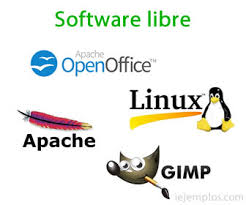
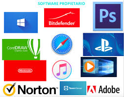
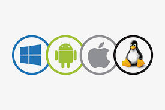

¿Que Es?
-
LIBRE Y PRIVATIVO
- usar el software con cualquier proposito
- estudiar como funciona el programa y modificarlo para adaptarlo a tus necesidades
- distribuir copias para ayudar a otros
- mejorar el programa y publicar esas mejores beneficio de toda la comunidad
- no se entrega el codigo fuente o se prohibe modificarlo
- solo se permite usarlo bajo las condiciones que impone el fabricante
- generalmente se prohibe copiarlo o copartirlo con otros sin autorizacion
TIPOS DE SOFTWARE
-
PROGRAMACION
SOFTWARE DE APLICACION
- procesadores de texto
- hojas de calculo
- aplicaciones moviles (whatsapp, duolingo)
- software multimendia(photoshop)
-
SOFTWARE DE DESARROLLO
- editores de codigo como el recien mensionado visual studio code
- copiladores e inerpretes que transforman el codigo fuente en un lenguaje que la computdora entienda
- depuradores que permiten encontrar errores o fallas en el codigo
- sistemas de cotrl de versiones , estos guardan el historial de cambios del codigo y facilitan el trabajo en equipo
-
SOFTWARE DE SISTEMA
- sistema operativo (windows, linux,etc)
- controladores de dispositivos (drivers)
- programas utilitarios (antivirus, herramientas de gestion etc)
>SOFTWARE
conjunto de programas, instrucciones y datos que permiten que una computadora o dispositivo realice tareas especificas. su funcion principal es establecer una inerfaz entre el usuario y el hardware ,facilitando la interaccion y optimizando el uso de los recursos del sistema
el software libre es aquel programa informatico que se distribuye con una licencia que garantiza a los usuarios cuatro libertades esenciales

En cambio el software privativo es aquel programa informativo cuya licencia restringe las libertades de uso,copia,modificacion y distribucion:

esta la programacion que es el proceso de creacion de instrucciones llamadas codigos , esto es como darle indstrucciones a la maquina para que pueda ejecutar acciones de manera automatica ,tu decides lo que quieres que haga los objetivos pricipales
El software de apliccion es el conjunto de programas informaticos diseñados para que el usuario realize tareas o actividades especificas , ya sean de trabajo estudio , comunicacion, entretenimiento u otros finer , por ejemplo:
las herramientas que se usan aca para crear otros programas son visual studio code que de hecho ahora en 2025 este año 5to año esta usando esa herramienta para crear nuevos sitios web y tiene una facilidad de creacion que permite entender y facilitar su uso.hay bastantes categorias de software de desarrollo como:
este es el conjunto de programas que permiten el funcionamiento basico de una computadora y la comunicacion entre el hardware y el ususario . su funcion principal es gestionar los recursos del sistema (procesador,memoria, dispositivos de entrada y salida) por ejemplo:

vueve a la pagina prncipal